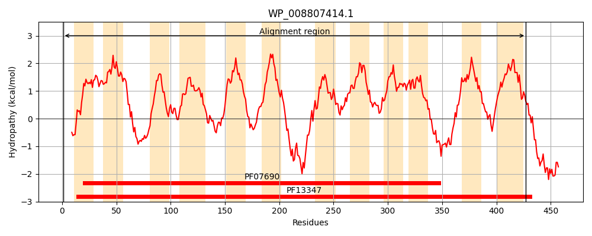
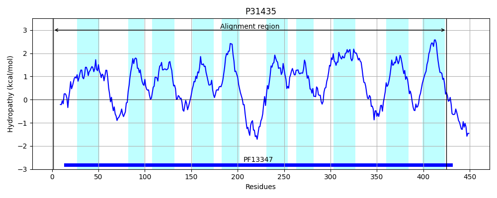
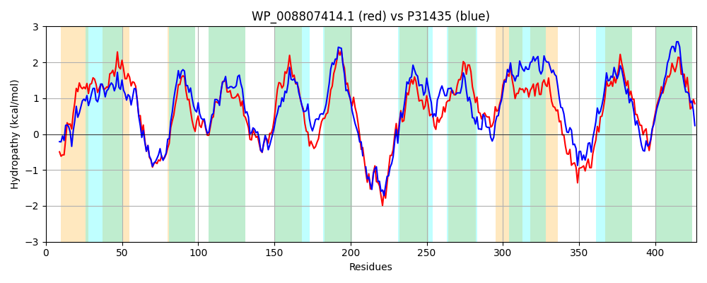

Hit Accession: P31435
Hit TCID: 2.A.2.3.4
Hit Description: gnl|BL_ORD_ID|9765 gnl|TC-DB|P31435|2.A.2.3.4 Inner membrane symporter yicJ - Escherichia coli.
Mach Len: 427
e:0.000000
Query TMS Count : 12
Hit TMS Count: 10
TMS-Overlap Score: 9.850000
Predicted Substrates:CHEBI:27350;xyloside
BLAST Alignment:
Score: 1087 , Bit scores: 423 bits, E-value: 2.1e-145, Alignment length: 427, Percentage identity: 46
Query: 1 MADNRLSIKEKIGYGMGDAGCNIIFGAIMLFVNYFYTDIFGLAPALVGVLLLSVRVIDAVTDPIMGALADRTRSKYGRFRPWLLWIAFPYALFSVLMFTTPEWTYNSKVIYAFVTYFLLSVTYTAINIPYCSLGTVMTADPKERVACQSYRFVMVGIATLLLSLTLLPMADWFGGADKAKGYQMAMTVLAFIGMCMFLFCFATVRERIHPAVQTNDELKKDLKDVWKNDQWVRILLLTLCNVCPGFIRMAATMYYVTWVMGQSTHFATLFISLGVVGMMIGSMLAKVLTDRWCKLQVFFWTNIVLAIFSCAFYFFNPHATTLIMVLYFLLNILHQIPSPLHWSLMSDVDDYGEWKTGKRITGISFSGNLFFLKVGLAVAGAMVGFLLSWYGYDAGAKAQSASALNGIVLLFSVIPGVGYLITAGVVR 427
M LS+KEKIGYGMGDA +IIF +ML++ +FYTDIFG+ VG + L R +DA++DP MG LADRTRS++G+FRPW+L+ A P+ + VL ++TP+ + N K+IYA +TY LL++ YT +NIPYC+LG V+T DP +R++ QS+RFV+ +L ++ ++P+ + GG +K G+Q + VL+ + M FCF T +ER+ A T +++DL+D+W+NDQW + LLT+ N+ +R A MYYVTW++G F F++ VG +IGS LAK LTD CK+ +F+WTN +LA+ S A +F A+ + V F++ +LHQ+ +P+ W +MSD DYGEW GKR+TGISF+G LF LK+GLA GA++G++L++ GYDA KAQ+++ ++ I+ LF+++P + YL++A + +
Sbjct: 1 MKSEVLSVKEKIGYGMGDAASHIIFDNVMLYMMFFYTDIFGIPAGFVGTMFLVARALDAISDPCMGLLADRTRSRWGKFRPWVLFGALPFGIVCVLAYSTPDLSMNGKMIYAAITYTLLTLLYTVVNIPYCALGGVITNDPTQRISLQSWRFVLATAGGMLSTVLMMPLVNLIGGDNKPLGFQGGIAVLSVVAFMMLAFCFFTTKERVE-APPTTTSMREDLRDIWQNDQWRIVGLLTIFNILAVCVRGGAMMYYVTWILGTPEVFVA-FLTTYCVGNLIGSALAKPLTDWKCKVTIFWWTNALLAVISLAMFFVPMQASITMFVFIFVIGVLHQLVTPIQWVMMSDTVDYGEWCNGKRLTGISFAGTLFVLKLGLAFGGALIGWMLAYGGYDAAEKAQNSATISIIIALFTIVPAICYLLSAIIAK 425 | Protein Hydropathy Plots: |
|---|
|  |  |
Pairwise Alignment-Hydropathy Plot:
|
|---|
|  |